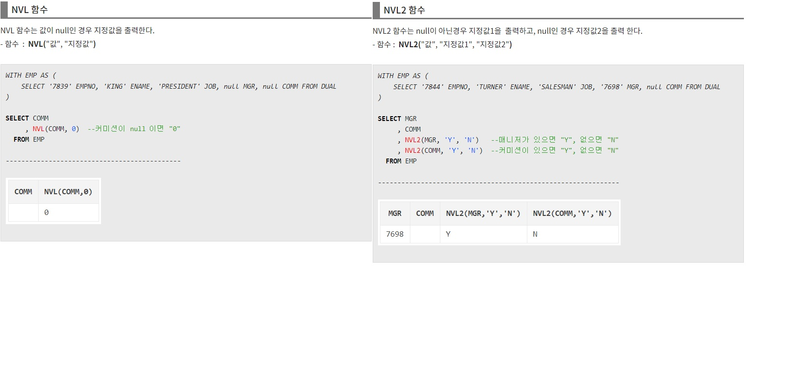
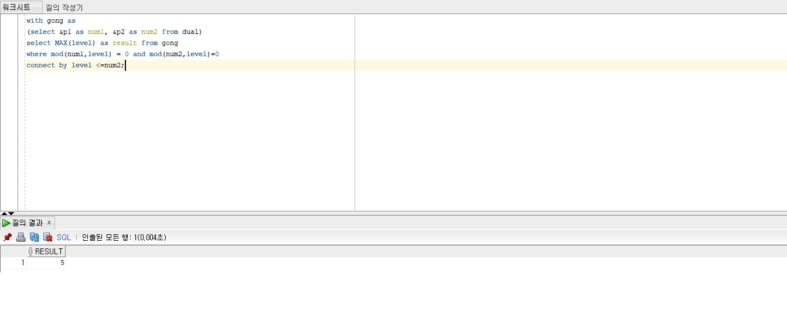
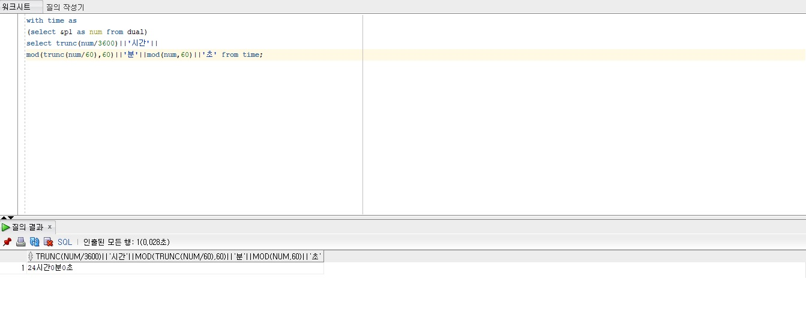

데이터베이스 명령어에는 데이터 정의어(DDL), 데이터 조작어(DML),
데이터 제어어(DCL), 트랜잭션 제어어(TCL)가 있습니다.
위는 과제에서 자주 이용했던 데이터 조회, 삽입, 수정, 삭제인 DML의 사용예시 입니다.

정보를 조회할때 null값을 0이나 다른값으로 표기해주기 위해서 NVL 함수를 사용했었습니다.

이 코드는 학교에서 배웠던 with절을 활용하여
최소공배수를 구해보고 초를 시간과 분, 초로 나누어 계산해 보았던 것입니다.
